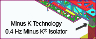
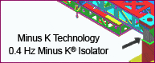
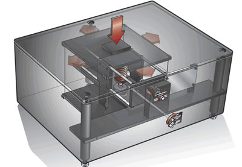
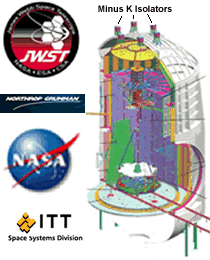

NASA/JPL needed a dynamic test bed for the Space Interferometry Mission (SIM) to demonstrate spacecraft vibration-induced errors of a few nanometers.
Download case study
NASA/JPL needed a dynamic test bed for the Space Interferometry Mission (SIM) to demonstrate spacecraft vibration-induced errors of a few nanometers.
Top researchers at over 200 leading universities and government labs have selected Minus K products to achieve the superior vibration control needed in their projects!
Minus K's Negative-Stiffness isolators Selected for James Webb Space Telescope Ground Testing
The University of Texas Center for Learning and Memory's transmission electron microscope (TEM) uses a custom Minus K negative-stiffness isolation platform.
The measurements below show the 1.2 to 2.5-Hz horizontal vibrations the equipment experienced in the fifth-floor lab before (left) and after (right) isolation with a 0.4-Hz negative-stiffness system.
(Measurements courtesy JEOL U.S.A., the TEM manufacturer)
Standard and Custom Vibration Isolation with Better Performance than Active Systems
Minus K is an OEM supplier to leading manufacturers of SPMs, microhardness testers, NSOMs and profilers.
{% include business-seals.html %}{kind=link}